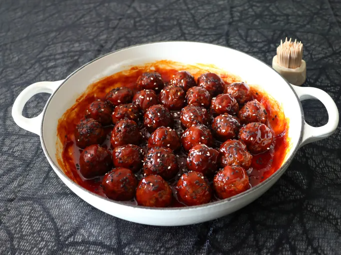

Red Devil Cocktail Meatballs

Description
Here is how you make Red Devil Cocktail Meatballs. Inspired by allrecipes.
Ingredients
Meatballs:
- 8 ounces ground beef
- 8 ounces ground pork
- 1 large egg
- 2 tablespoons milk
- 1 1/2 teaspoons kosher salt
- 1/2 teaspoon freshly ground black pepper
- 1/2 teaspoon onion powder
- 1/4 teaspoon garlic powder
- 1 pinch cayenne pepper
- 1/2 cup breadcrumbs
- 1 teaspoon vegetable oil
Sauce:
- 1/3 cup gochujang (Korean chili paste)
- 1/4 cup rice vinegar
- 1 tablespoon soy sauce
- 1 tablespoon Sriracha chile garlic sauce
- 1/4 cup maple syrup
- 2 tablespoons water
- white and black sesame seeds, for garnish
Steps
- Combine beef and pork in a bowl, and use a fork to gently break up and mix meat together until evenly combined.
- Add egg, milk, salt, black pepper, onion powder, garlic powder, cayenne, and breadcrumbs. Continue mixing with a fork just until everything is evenly combined. Cover, and refrigerate for about 1 hour before using if possible.
- Preheat the oven to 475 degrees F (245 degrees C). Line a sheet pan with foil and lightly grease with 1 teaspoon of vegetable oil.
- Transfer tablespoon sized portions of meat mixture onto the sheet pan. Dampen hands with water and roll the portions into balls, spacing evenly as you do.
- Bake in the preheated oven until meatballs are lightly browned, 10 to 12 minutes. Set aside while you make the sauce.
- For sauce, add gochujang, rice vinegar, soy sauce, Sriracha, maple syrup, and water to a saucepan and place over medium-high heat. Whisk to combine while sauce comes to a simmer. Reduce heat to medium, and cook until sauce begins to thicken, just a few minutes.
- Transfer the meatballs in, and cook, stirring occasionally, until meatballs are heated through, and sauce has thickened to your liking. Serve immediately with toothpicks. Garnish these fiery meatballs with white and black sesame seeds to represent sparks and ash.
Home